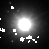
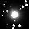

Genuine SPHEREx-derived visual previews. Field processed; named-source visibility, motion and variability are unverified. Wavelength, masking and calibration differences remain. Full original processing manifest
2025-05-16T22:56:23.637 UTC · 1.655 µm 2025W20_2D_0243_12025-12-26T05:13:59.785 UTC · 1.642 µm 2025W52_2A_0161_2

2026-04-24T15:21:26.437 UTC · 2.329 µm 2026W17_2A_0255_2

2026-06-12T20:39:42.160 UTC · 1.955 µm 2026W24_2B_0242_4